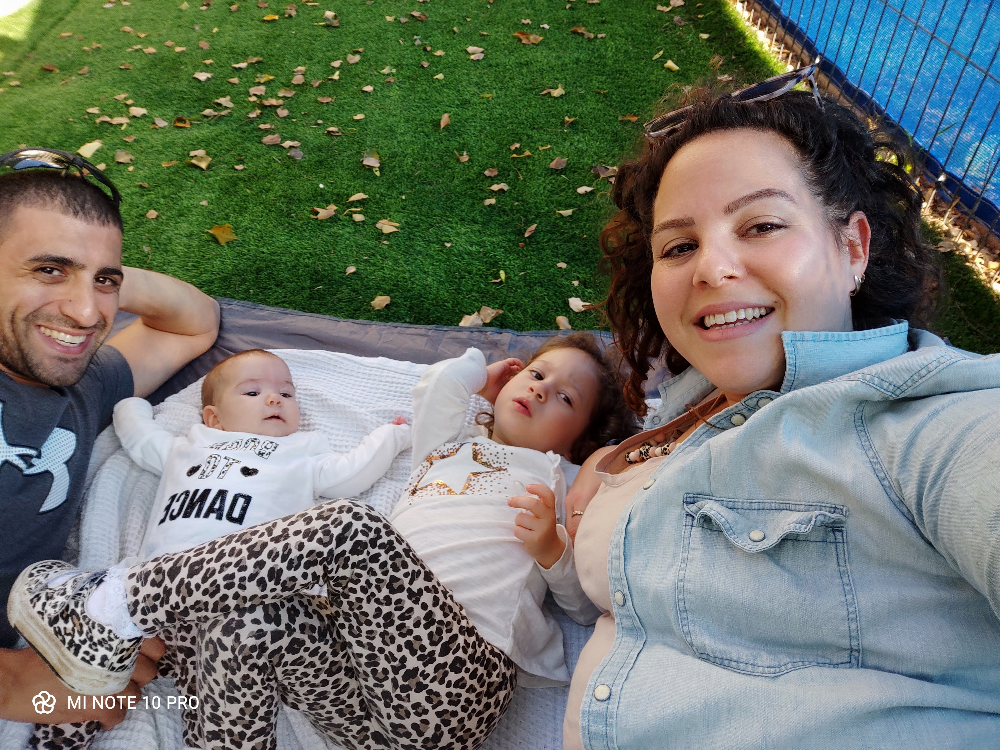

Who am I?

Summary
Hi !
I am Gal Meir,
I am 35 years old, married to Nufar Meir for 6 years and have 2 beatiful daughters Avigail and Daniella and we live in Ganey Tiqva.
My job is a firefighter and before I was a security gaurd in many places like on crusie/cargo ships, Border crossings, and more...
These days I want to change my career and I'm studing QA engineering.
My Family

I have tow parents, my mom Dalya and my father Sham-Tov, my father past away few years ago. both of them worked in the police and are in retirement.
I have 2 brothers, Kobi the oldest one and Ohad is the youngest one, both of them are marrired and Kobi has 3 children.
My beatiful wife Nufar I met in a dating app and after a year we got married and had 2 children, Avigail 4 years old and Daniella 1.5 years old.
Nufer is Early Childhood Development Instructor, she loves are job very much. she also works as Instructor at the school she studied to train more Instructores.
Gallery
My job

I am a FireFighter for 6 years, my job is very dangerous. During that time I have been in many car accidents,Fires, Gas leak and more...
About one year ago in a fire in the field with alot of vegetation that risked houses near by, I fell on my shoulder and dislocated it and had a surgery and couldn't work for a year.
This job is not for everybody, you need to be a team player, sometimes need to take hard choices alone and under pressure.
In our line of duty you expose to some unfortunate horrors after car accidents, fires and more, and you need to be strong enough to carry on.
Gallery
More about Fire and Rescue for Israel click HERE
Alittle safty in case of fire at home click
HERE
My Hobbies
- Playing Soocer
- Playing Poker
- Playing computer Games